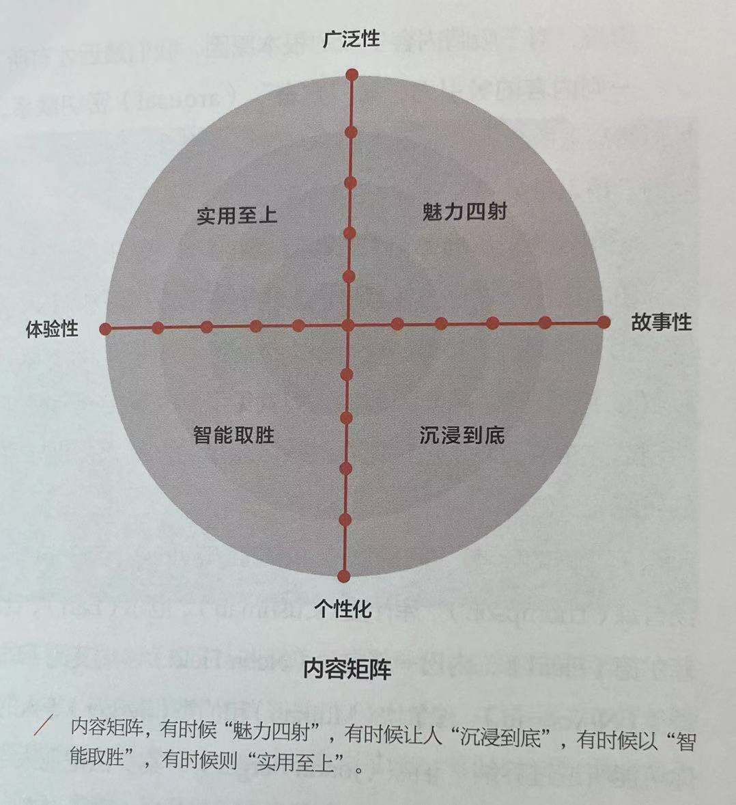
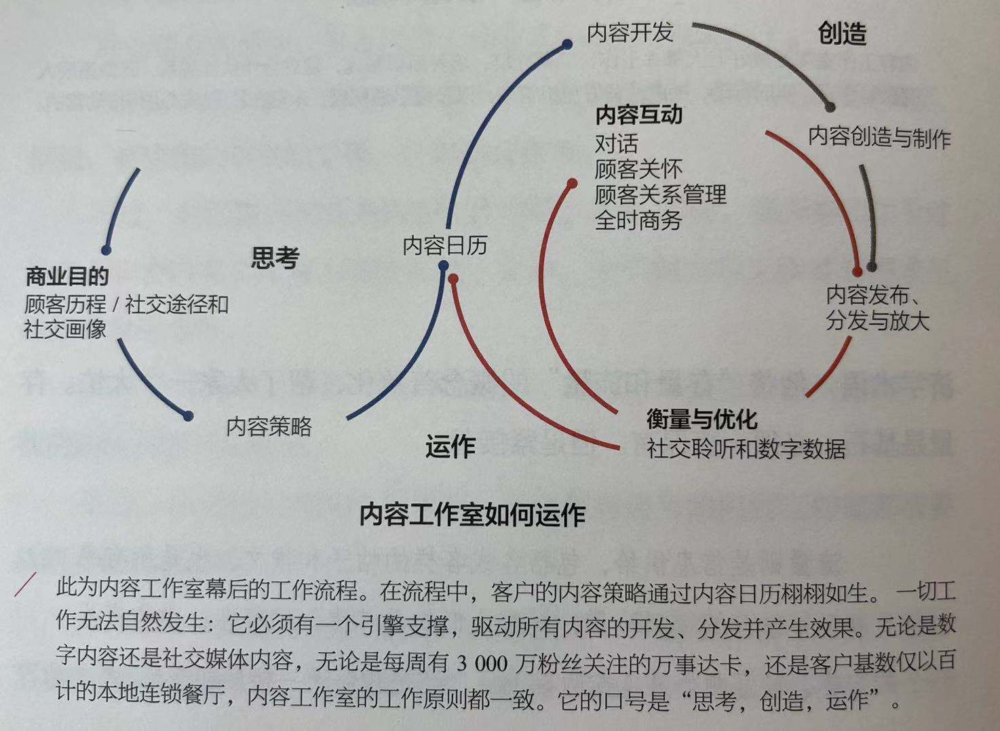

自序 来自杜佛古堡的观点
VIIII 当年，奥格威写下《奥格威谈广告》部分内容的书桌还被保存着，只是不在同一个房间。五花八门的书籍陈列于书架上，证实了奥格威的信念——最具生产力的人，往往最懂得博览群书。
01 小尾声
3 《奥格威谈广告》的开篇章节名为"序曲"，充分体现了大卫的风格：开门见山，直言不讳。这也与他一贯的简洁文丰相互呼应，其中包括他的一句名言："我憎恨规则。"
02 数字革命
23 慢慢地经过很长时间的发展，用户订阅才成为当今互联网商业模式中不可或缺的一部分——一直到现在，此观念依然在遭受无数的抵抗和否决。
03 短行军
不和谐的喧嚣嘈杂
34 碎片化本身早已沦为视战术为目的之地步：任何能够衡量的短期项目，因其广为人知的浏览量或点赞人数，便能名噪一时。有人将之比拟为吸食可卡因：迅速蹿红就是一切——因此让人容易上瘾。
35 1995年，奥格威在一场对美国广告代理商协会（广告业首屈一指的协会之一）做的演说中提及：
我猜测，在当前所有坊间宣传的广告活动中，有95%在创作过程中都缺乏真正的长远考量，他们就是心血来潮的一时之作，因此摇摆不定，翻来覆去，也因此在每季之间毫无连贯的品牌个性可言。随波逐流地匆促改变，很容易却很悲惨。然而，至高无上的奖赏，正等候一群头脑灵光的广告主，他们不仅能创造良好的品牌形象，也能长期坚持品牌形象稳定不变。
至今，依然如此。
星巴克 38 舒尔茨曾说："我们的故事就是我们广告招牌。"
04 数字生态系统
万物之死？
52 此种原因在于，尽管数字媒体涌现，但线性电视的收视率依旧维持良好态势。当然，真正的故事不外乎媒体有所斩获，是以平面媒体的牺牲为代价的。分类广告已死无疑，而直效（direct response）也全部转移到数字媒体。甚至可以说，平面媒体并未完全死亡。当优质的新闻业者得以提供铿锵有力的内容，又有足够规模或足够专业的精英受众愿意买单支持时，平面媒体依旧韧性十足。如此一来，以广告为主的可持续商业模式依然可行，尤其如果能以发行量作为计费标准。以上提及的要素，只要其中有一个破功，此种商业模式便随即瓦解。
54 电视没死的六大理由
- 电视是大规模达成"净到达率"的最安全途径，任何其他方法至今无法实现。
- 电视可免于陷入广告作假的困境，而广告作假可能为数字投资带来高达三分之一的损失。
- 由于电视广告内容在电视机之外的其他设备都可收看，电视受众因此被大幅低估。当收视人口统计出"真实"数目时，电视广告花费将会增加。
- 电视，毫无疑问依然是情感沟通的最佳工具；品牌平台需要情感支撑。
- 计量经济学的结论证明，电视广告预算的削减对销售有害。
- 线上广告本身就是持续不断的电视广告：它已成为第二大广告花费类别。
数字贫民窟
58 视浏览量为单一目标，任何专业营销人士都会觉得索然无味：数字成分是整体形态的一部分，通常在传播议题设定层次运作，也最能发挥功效。此外，我们也有堆积如山的证据显示，当数字媒体与传统媒体合作无间时，效果最好。
"和"的时代
61 所以，我乐于再进一步呼吁，当下就是"和的时代"
在一切革命中，多少无法避免，都会出现狂热者与阻挠者，激进派与保守派。矛盾展露无疑，但是，此时此刻，我们可能也必须认清所谓的添加物和互补物带来的好处，譬如：
模拟"和"数字
一体化"和"专业化
片段"和"规模
理智"和"疯狂
形式"和"内容
即将面临的战争：视频领域的YouTube与脸书之战
62 短暂型视频网络可在片刻之间散发最大影响力，也是为互动而生。
. 存档型视频网络锁定视频收看体验，可托管和安排内容。此类网络为视频观赏而生。它们具有强大的搜索影响力，是搜寻视频人士的首选。
63 每隔18~24个月，YouTube的网站都经历重大变革：究竟是一个内容平台，一个社交网络，还是一个互动体验中心？大概两年前，在下线了量身定制的功能后，YouTube的身份得以明确。此后，YouTube就一直为用户提供标准的视频体验。它的商业模式的基石是前贴片广告和一项新的免广告付费订阅服务）YouTube Red。
数字时代领导人的五大须知
65
- 切记不断提问："可是为什么？"像一个好奇心十足的5岁小孩，执着坚决，一再反问。"为什么"是唯一可以穿越云雾，找到真正问题的词语，也能协助我们区分手段和目的。为什么？为什么？为什么？在内部培训时，我们甚至设计过一系列以"为什么的力量"（The Power of Why）为名的课程。
- 切勿盲目崇拜必然性。随手可得的一系列措施并非一定有用。审慎看待所有KPI（关键绩效指标），面对单一KPI时，将其视同瘟疫病原，抱以很大程度的保留态度，因为它可能呈现一时扭曲的轻重缓急感，进而影响整体组织。
- 要切记鞭策自己完全开放。身为领导人的你，拥有难能可贵的机会，大力破除内部如简仓般各自为政。同时，比起以往，你需要更多人保持同心协力的态度。此时，守口如瓶、秘而不宣，无异于输家的下策。
- 切勿聘用目中无人的"天王天后"。他们比比皆是，容易让人目眩神迷，随即让人大失所望。正如我的一位客户所言："才华不过是基本配备，唯有不屈不挠，才能与众不同。"当我对毕业生们一再重复此话时，他们往往倒吸一口气，但没有什么比这更千真万确的了。
- 切记懂得欣赏二元论。数字世界的张力，可以把你或你周遭的人推入一场零和博弈的游戏。然而，成功之道有赖于管理两者之间的张力，绝非一味坚持非"此"即"彼"。两者兼具，则有趣多了！
多芬 69 我向来笃信一个理念——品牌必须兼具大理想（详细解释见98页）和大创意。所以，我们的解决方案是为品牌发展文化观，这不仅有助于商业获利，也能发挥社会影响力，让一切更美好。
05 千禧世代存不存在？
76 千禧时代，实际上更偏向利他主义——面对社会不幸人群，千禧人远比他们的长辈们，付出更大的关怀，给予更多的布施。
与生俱来的权利意识，是千禧被贴上的另一个标记，不过它就是洗不掉。事实上，比起X世代，千禧世代有更大愿意储蓄金钱，也抱有节俭意识，比方说，他们耐心十足、认清现实——当要购屋置家时，自己必须"准备就绪"。
06 后现代品牌
94 2009年8月，丰田第一次接到关于在美国出现事故报告时——当时有可靠的证据表明那些事故是突然加速所致——丰田的初步反应很慢。真相浮现的时候，丰田看似在拖延。现在回想，我不认为丰田当时有任何蓄意隐瞒真相的阴谋；相反，一个矛盾组织下的内部文化与办公室政治，使其从来不曾把公开透明当作重要的价值指标看待：而数以百计的小决策，最后汇总成为整体行为的特征之一。丰田花了好大工夫才学到教训，无奈难逃形象受损的恶果。
95 前美国总统林肯有一句名言在IBM广泛被引用：" 品格是一棵树，声誉就是树影。 "
品牌大理想
98 大理想是品牌定位之一，但并非所有定位都是大理想。定位可以基于一个纯粹的功能利益点：X品牌洗得更明白，或是更清爽。但品牌大理想，则是拥有一个超越简单功能赢利点的世界观或宗旨，即使该理想应当由品牌的功能层面予以支撑。
同时， 品牌大理想不是一个肤浅的情感利益点，它触及文化。大理想自成一个信念体系，驱动品牌所作所为，并协助品牌吸引广泛的支持。 它是由比以往拥有更大表决权的消费者和利益相关者共同决定的某种东西。有鉴于此，在奥美，当我们撰写品牌大理想时，从来不曾将之视为一般的"普通"定位。我们当时想寻求一种简单的方法，不仅捕获一个品牌的大理想，同时迫使撰稿人员发挥才情，表达品牌对世界、对人生，或对所处国家的观点。
. 大理想的填空题如下：
X品牌相信这个世界会变得更美好，如果......
读者不妨填填看，从你耳熟能详的诸多动力十足也具有清晰识别的品牌下手。也许会花上一点时间，但你很有可能协助品牌写出让人觉得别有情趣，甚至带点煽动性，也正好凸显品牌特征的陈述句。
我们已经发现，最佳的大理想，似乎介于思维与经验的交集之中。
99 "最佳自我"和"文化张力"携手并肩，形成品牌的信念。
从真实性到信念
101 我们可以通过研究，以令人信服的方式示范信念的威力。在奥美所做的一项调研中，我们比较不同品牌，并将之分成两组：有观点的一组获得较高评分，另一组则是低评分。换句话说，一组是对世界有信念或有代表意义的品牌，另一组则不然。研究结果证实，品牌信念十分重要，因为消费者在决定购买时，会明确无比地选择保持信念的赢家。
07 内容为王，但含义为何？
119 在营销传播行业中，"内容"是人们最常见使用，重复使用，不幸误用，甚至滥用的词。
品牌化内容
. 品牌化内容，指品牌利用一个载体，以娱乐而非销售为首要目的，植入传播信息。它最早是广告业的支流之一，有其自身的发展运作方式、知识理论与独立运作的代理商。过去，品牌在本质上扮演赞助商的角色，或拥有整体资产，或只是娱乐叙事的一部分。
122 信息的组成部分以下列方式汇集在一起：什么是品牌付费的部分（paid），什么是品牌自营的部分（owned），什么是品牌赢取的部分（earned），即大家熟悉的P-O-E（参加本书231页）。
思考内容
126 当然，如同君子自重的商业人士，我们天生喜欢四象限的方格矩阵。奥美的内容矩阵如下页图所示：纵轴从上而下，由宽广性（广泛和大众化）到个人化（个性化和个体化）；横轴从左到右，由实用性（有用和富含信息）到娱乐性（有趣和动人）。
内容的设计
魅力四射的内容 130 惊喜之后，一种创造性的快乐感开始在人体蔓延。实际上，这一切纯属生理反应。神经递质多巴胺适时发挥作用，而大脑中的神经突触也随即开始兴奋。
基于以上研究，人们要理解互联网的关键，在于化学反应，而非外在技术。再说，亢奋所带来的的正向释放，实际上是复制了常见的治疗过程。情感的社交分享，效果立竿见影，也发挥疗愈效应。
132 模因（meme）是另一个必须谨慎对待的词。人类学者和进化生物学家理查德·道金斯（Richard Dawkins）在1976年出版的 《自私的基因》 的一书中创造了"模因"一词。作者形容模因之于文化就等同于基因之于生物体。后者通过化学过程自我复制，模因如出一辙，必须经历文化的重复和诠释，诸如歌曲、诗篇、时尚和学习技能。
135 令人十分震撼的惊奇之处在于，女性看自己和别人看她们，两者竟然大相径庭。虽说如此，这展现出的一切也无比打动人心。这就让人产生了大量多巴胺。
以智能取胜的内容
142 借此，或许大家值得记住"智能"的第二层意思：这不只是一个形容词，也是一个缩略词SMART——特定的（specific）、可测量的（measurable）、可实现的（attainable）、真是的（realistic）和及时的（timely）。如今这些目标不只适用于商场上汲汲营营的专业人士，数字革命也为普罗大众赋能，无论男女都可以逐一运用在个人层面。
实用至上的内容
143 最后一个类型的内容，再实用不过了。实用一词听起来平淡无奇，但事实上非常给力。实用的内容，可帮助和加强来自个人、社群和企业的集体经验。此一形态的内容，让人们资源在握。
144 第一个资源是知识。企业向来视知识为必须分享的东西。有些消费受众比其他人更受照顾。
154
08 数字时代的创造力
所以，创意是什么？
191 库斯勒在其有关创造力的著作《创造的行动》（The Art of Creation，1964）一书中，将创意定义为："在两种毫不相干的思维矩阵中，形成一种双向联系。"
. 越具有原创性，精巧微妙，引人入胜，也让人参与其中的创意组合，越容易引起我们的注意，当然也越可能是大创意。
说故事
196 凡是故事，皆有主角，一个试图完成某件事情的人。他在沿途遭遇困难，随后有了解决方法，并从中吸取教训或领会意义。
197 我的同时谭启明写过一段凌然难忘的话："人就是一只会说故事的猿猴。他们通过故事了解世界，而故事也是感动人心的方式。"
199 品牌必须是说故事的人，而最引人入胜的品牌故事，通常也最简单——新颖和熟悉同时存在。但是，原型鲜少启发灵感。从业人员将一个平拍严格框定在某一特定而非其他的原型时，也就局限了品牌说故事的范围，相对缩减了可能的探索机会。同样，另一常见的把戏——将不同原型的元素相互糅合也会完全破坏分析的价值。当原型发挥最大作用时，如同一个起点，方便大家针对品牌的故事、行为和角色等，展开更有意义的讨论。但在最糟糕的的时候，原型就好比品牌自己扮演的骗子，引起一时热潮，但稍纵即逝。
无论如何，有些客户崇尚规则，也希望广告人物看起来像某种原型角色，故运用原型的做法依然具有其吸引力。我经常听到客户说"可是X表现得不像Y"，这正是广告糟糕的原因。或许，说故事有原则可循，但原则越明显，故事本身就越不吸引人。
归根结底，是什么让作品伟大？
201 显然，大创意是也。
一个引人入胜的故事。
一种诉诸情感，也诉诸理性的吸引力。
此外，在我看来，还有其他的东西。
以一个我通常拒绝使用的词来说，就是作品必须"前卫"。
202 对我而言，前卫是普通的反义词。前卫意味着准备承担风险。
203 伟大作品的另一大要求，就是简单。
. 数字时代以不可胜数的缤纷途径，创造了复杂性。我早已注意到为数不少自诩"数字"的创意，都是复杂得无可救药。
引起关注而让人用心聆听的最佳之道，就是无论你在做什么，本质上都要保持简单而充满美感。
09 数据：数字时代的硬通货
大数据注意事项
210 第一，我把这种现象称为"收集谬论"：收集的数据越多，就越有价值，所以，只管继续收集就是了！但我并未看到有任何佐证。大数据的"庞大"助长了这种观念。虽然蛮力算法能够创纪录地搅动起海量数据集，但这并不意味这样产出的分析会有些许不同。只因为你能去收集数据，并不表示你就应该这么做。相反，麦德奇说："策略你需要去测量的东西，而非你可以去测量的东西。把焦点放到与你目标相关联的数据上。"这由你（而非你的算法）决定。
第二，有一种行为叫"效用赤字"，指你拥有数据，但他们没被使用。
211 第三，大数据也会有壁垒分明的"筒仓"。当今的业务操作中，壁垒无处不在。在营销代理商中，广告部与直效营销部各自为政，社交媒体专家与公关团队不沟通。客户也是一样，某个客户，抱歉，这里不能透露名字，其公司的一个团队决定做某件事，并指派创意工作，而审批人却来自另一团队。如果人与人之间存在壁垒，他们则无法一起工作；如果数据之间存在壁垒，它们则根本无法为你所用。
第四，大数据有"承受门槛"。很简单，老大哥可以把大数据玩弄于掌心。广告主承诺会自我监管，但个人会担心自己的隐私暴露。
真正有用的数据
214
1. 采用企业单一视图
企业花了大量投资来建立"客户单一视图"数据库，用以存储企业所了解到的某个客户的一切信息。
.
2. 消除平台障碍
平台和营销技术的问题在于，它们与其使用者的营销人员把数据分析当成技术，而非创意策略。营销人员只运用了技术的一小部分潜能，即使购买一些炫目耀眼的新工具很简单，但要让组织去拥抱改变，让它们得出的洞察发挥价值，却很困难。
215
3. 区分测量与失效
. 测量文化执着于过程，而实效文化强调结果。测量文化喜欢给核对表打钩，实效文化关注把事情做对。测量文化往回看——"我们的工作表现如何？"实效文化向前看——"我们下一次如何才能做得更好？"
216 消费者调研表明，顾客不回购是因为觉得产品不可靠，他们批评产品的制造品质不够高。
. 就像去赛跑，你可以打破自己的纪录，但如果别人跑得比你快，你还是会输。没错，企业管理层每年都收到工厂的测量值，告诉他们产品的品质提高了。但其他厂商在按照更高的标准生产。所以，消费者会选择买不常出毛病，或不常让他们失望的产品，这不奇怪。该客户遵循的是测量文化，而非实效文化。这对业务损害很大。他们本该有提升三分之一销售量的机会。
218 5. 减少指标用量
. 而我们常常做不到这一点，原因很简单：它需要预先绞尽脑汁去思考。我们真正要达成什么，原因何在？想明白，坚持住，你就能打造"一个真理版"，而非陷入悬而不决的争吵中。
12 三大战场：社交媒体、手机与全时商务
全时商务
308 很多企业失败是因为，它们始于销售，也终于销售，仅拥有与客户间完整商业关系的一部分——真正完整的关系，早于销售开始之前，且在第一次交易后继续维持。很多时候，第一笔交易并不赚钱，盈利来自终生的客户关系。
315 体验
全时商务的体验就是要在每个接触点都让人愉悦。坦言之，如果我在网上买了件衣服想晚上就穿，那我希望能到实体店取货。如果店里没有我的尺码，那我就希望有快递免费配送。
当然，我希望的东西还有很多。比如，购买前，我希望有人给予指导建议。超个性化的顾客服务就可以做到这些。
超个性化的顾客服务是全时商务的一个支柱。根据忠诚度、与品牌的互动和购买记录，品牌可以为我定制产品（跟普通标准相比），并用多种方式为我供货。
17 文化、勇气、客户与响板
伙伴与仆从
445 上述努力鼓励了我们的看法：我们是客户的合作伙伴。我们经常恳求与他建立伙伴关系。此外，确认无疑也是始终变的事实，就是最出色的作品都是源于具有深度与长期的双方合作，其中的核心就是伙伴关系，也是一种共享成果的责任感。
446 其实很简单，主人很难摇身一变成为仆从。所以，无论离实现伙伴关系的愿望有多近，我们都应该记住，我们是伙伴，也是仆从，这也是我在培训一代又一代的新人时，都会可以提醒的。无论我们有多不情愿承认，本质上，我们都是服务人员。